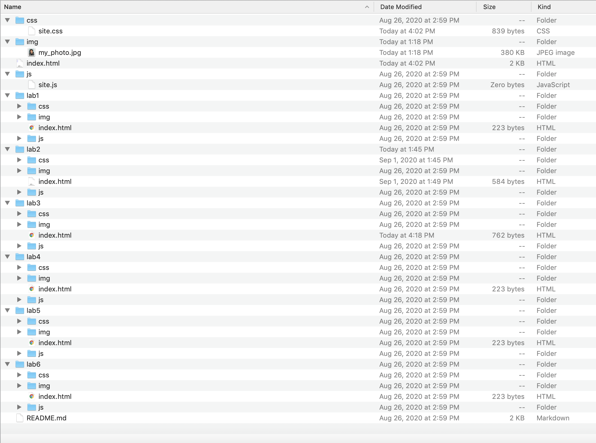

The purpose of this lab was to teach us how to create a local file structure on our computers which will eventually reflect our Github servers.
I found no real challenges during this assignment overall it was quite enjoyable and a good reminder to organize my files on my computer.
Task 1 We use the file structure from the template downloaded from GitHub, so we just took a screenshot of the folder that we already have. Task 2 To create the index.html for our personal websites, we used the Atom’s html template and followed the guidelines without difficulty. Task 3 We created a simple html file describing the lab and had no difficulty with that. Task 4 We tested our files locally and they looked good. Also we fixed the link to lab 2 in our homepage by renaming it from helloworld.html to index.html this allowed for it to work. Task X To create a style sheet for our websites, we looked at Wes’s website for inspiration because we liked its format, specifically the division between your lab links and your introduction. We found the parameters that you used to create this style and looked up how to use margin and border and then referred to Sebastian’s work from a previous semester to better understand how to create two divs with different ID’s and defined styles for these different ID’s. We also experimented with different borders and styles. Then we proceeded to edit our homepages individually to match our personal styles and information.
The results of this assignment were a clean and consistent file structure on our computers.
